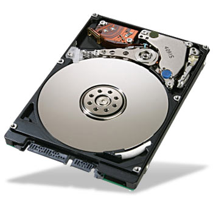
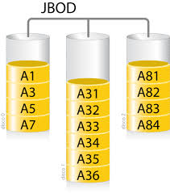
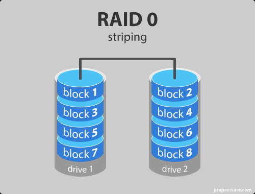
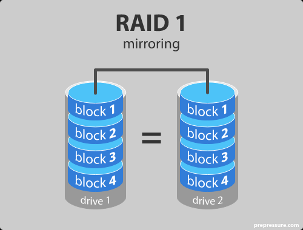
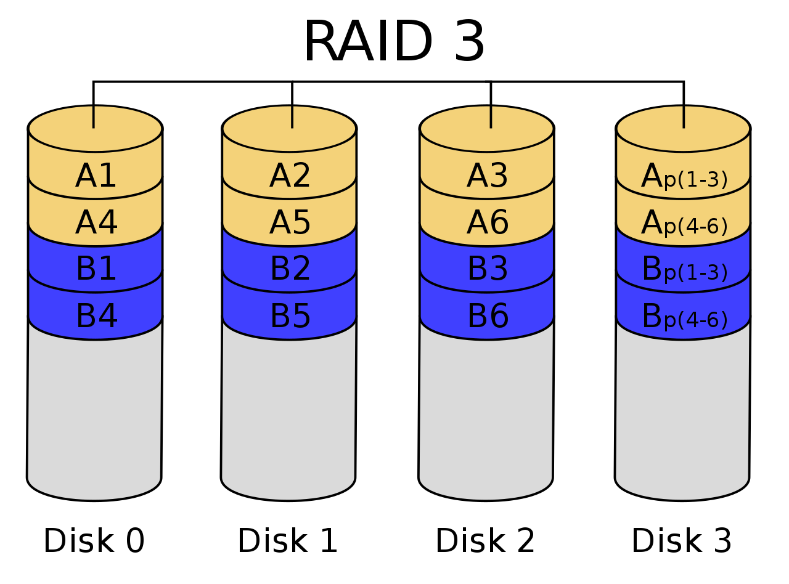
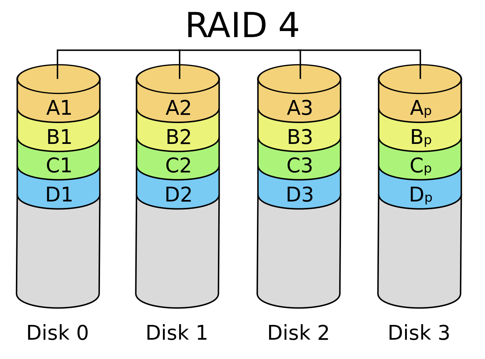
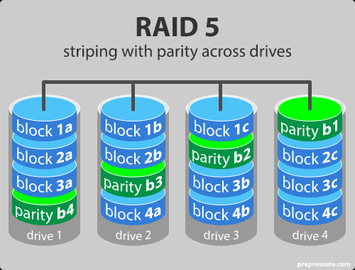
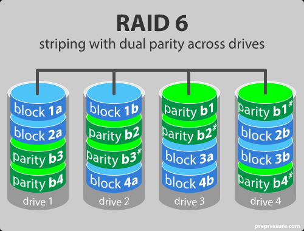
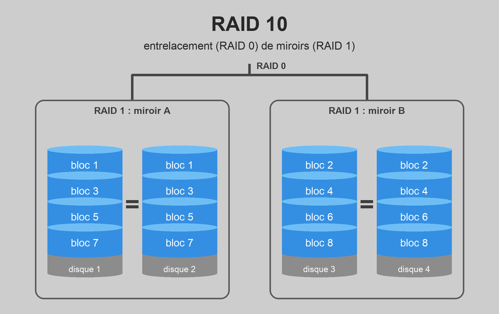
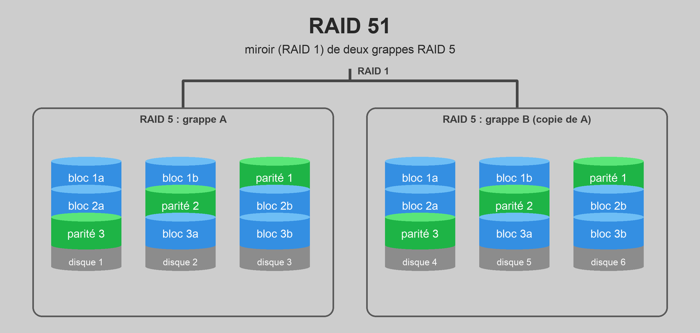

class: center, middle # Le traitement de l'information ## La technologie RAID --- ## Situation Tous les travaux des élèves de l'école sont enregistrés sur le serveur de l'établissement, qui ne contient qu'**un seul disque dur**. Un lundi matin, le serveur refuse de démarrer : le disque dur fait un bruit de cliquetis inquiétant et n'est plus reconnu. Les travaux de fin d'année de tous les élèves s'y trouvaient... À votre avis, qu'aurait-on pu faire pour éviter cette catastrophe ? -- * Faire régulièrement une **sauvegarde** sur un autre support. -- * Enregistrer chaque fichier **en double**, sur deux disques différents. -- * Répartir les données sur plusieurs disques et ajouter une **information de contrôle** qui permette de reconstruire un disque perdu. <span style="color: red;">→ Les deux dernières idées sont exactement ce que propose la technologie RAID !</span> --- ## Les disques tombent en panne ! <div style="text-align: center;"> <p></p> </div> * Un disque dur (HDD) contient des pièces **mécaniques** en mouvement : plateaux qui tournent à 7200 tours/minute, tête de lecture qui flotte à quelques nanomètres de la surface... * Un disque SSD n'a pas de pièces mobiles, mais ses cellules mémoire **s'usent** à chaque écriture. En moyenne, environ **1 à 2 % des disques** tombent en panne chaque année.<br> Dans un datacenter de 100 000 disques, cela représente **environ 4 disques en panne... par jour** ! --- ## Un air de déjà-vu... Dans le chapitre précédent, pour protéger un message des erreurs de transmission, on lui ajoutait des **bits de contrôle** : c'est la **redondance**. Le RAID applique la même idée, mais au **stockage** : | | **Codes correcteurs** | **RAID** | |:--------------------:|:------------------------------:|:----------------------------------------:| | On protège... | un message transmis | des données stockées | | Contre... | les erreurs du canal | la panne d'un disque | | On ajoute... | des bits de contrôle | une copie ou des blocs de **parité** | | Si problème... | on corrige le message | on **reconstruit** le disque perdu | --- ## Qu'est-ce que le RAID ? **RAID** = **R**edundant **A**rray of **I**ndependent **D**isks<br> (à l'origine : *Redundant Array of **Inexpensive** Disks*) Le RAID est un ensemble de techniques de **virtualisation du stockage** : plusieurs disques physiques sont regroupés et **vus par le système d'exploitation comme un seul disque** (un *volume*). Selon la manière dont les données sont réparties, on cherche à améliorer : * la **tolérance aux pannes** (la sécurité des données) ; * les **performances** (la vitesse de lecture et d'écriture) ; * la **capacité** de stockage. Chaque manière de répartir les données s'appelle un **niveau RAID** (RAID 0, 1, 5, 6...). Ces niveaux ne sont pas normalisés par un comité officiel : certains fabricants proposent leurs propres variantes. --- ## Un peu de vocabulaire * **Volume** : le « disque virtuel » que voit l'utilisateur, construit à partir de plusieurs disques physiques. * **Bloc** : morceau de données de taille fixe. Un fichier est découpé en blocs. * **Entrelacement** (*striping*) : les blocs consécutifs sont répartis à tour de rôle sur les différents disques. * **Miroir** (*mirroring*) : les mêmes données sont écrites à l'identique sur plusieurs disques. * **Parité** : information de contrôle calculée à partir des données, qui permet de **reconstruire** un bloc perdu. * **Tolérance aux pannes** : nombre de disques qui peuvent tomber en panne **sans perte de données**. * **Reconstruction** : après le remplacement d'un disque défectueux, recalcul de son contenu à partir des autres disques. --- ## RAID matériel ou logiciel ? Le RAID peut être géré de deux manières : * **RAID matériel** : une **carte contrôleur** dédiée gère les disques. Plus cher, mais plus performant (surtout pour les calculs de parité) et indépendant du système d'exploitation. * **RAID logiciel** : c'est le **système d'exploitation** (ou un pilote) qui gère les disques. Gratuit, mais il consomme une partie de la puissance du processeur. * Windows : *Espaces de stockage* ; * macOS : *Utilitaire de disque* ; * Linux : `mdadm`. <span style="color: red;">→ À la maison ou dans une petite entreprise, on rencontre souvent le RAID dans un **NAS** (*Network Attached Storage*), un petit boîtier de stockage en réseau qui contient 2 à 8 disques.</span> --- ## JBOD : Just a Bunch Of Disks <p></p> Ce n'est pas vraiment un niveau RAID, mais on le rencontre souvent : * Les disques sont simplement **mis bout à bout** en un seul volume. * On remplit le premier disque, puis le suivant, etc. * Les disques peuvent avoir des **tailles différentes** : les capacités s'additionnent. | Disques min. | Capacité utile | Tolérance | |:---:|:---:|:---:| | 2 | somme des disques | **0** | <span style="color: red;">Si un disque tombe en panne, les fichiers qu'il contenait sont perdus.</span> --- ## RAID 0 : l'entrelacement <p></p> * Les blocs consécutifs sont répartis **à tour de rôle** sur les disques. * Pour lire un fichier d'1 Mo sur 2 disques, on lit **500 Ko sur chaque disque en même temps** → environ 2 fois plus rapide ! * Dès qu'un disque est plein, le volume est plein : la capacité est limitée par **le plus petit disque**. | Disques min. | Capacité utile | Tolérance | |:---:|:---:|:---:| | 2 | n × (plus petit disque) | **0** | <span style="color: red;">Attention : si un seul disque tombe en panne, **toutes** les données sont perdues, puisque chaque fichier est éparpillé sur tous les disques. RAID 0 = zéro sécurité !</span> *Utilisation* : montage vidéo, jeux vidéo, fichiers temporaires. --- ## RAID 1 : le miroir <p></p> * Les données sont **dupliquées à l'identique** sur tous les disques. * Si un disque tombe en panne, on accède toujours aux données grâce à son **miroir**. * La lecture peut être plus rapide (on lit sur les deux disques), l'écriture ne l'est pas. | Disques min. | Capacité utile | Tolérance | |:---:|:---:|:---:| | 2 | 1 disque (le plus petit) | n − 1 | <span style="color: red;">C'est la méthode la plus sûre, mais aussi la plus **chère** : on paie 2 disques pour n'en utiliser qu'un seul.</span> *Utilisation* : données sensibles (comptabilité, documents importants), disque système d'un serveur. --- ## RAID 2 : un vieux souvenir... Le RAID 2 répartissait les données **bit par bit** sur les disques et ajoutait des disques de contrôle calculés avec... **le code de Hamming** ! (cf. chapitre précédent) Il est aujourd'hui **obsolète** : les codes correcteurs d'erreurs sont désormais intégrés **directement dans le contrôleur de chaque disque dur**. <span style="color: red;">→ Le code de Hamming que vous avez appris est donc toujours là, mais caché à l'intérieur de vos disques !</span> --- ## La parité : le cœur du RAID Les niveaux RAID 3, 4, 5 et 6 utilisent un **bloc de parité** calculé avec l'opération **XOR** (OU exclusif), déjà rencontrée dans le demi-additionneur : .float-right[ | A | B | A ⊕ B | |:-:|:-:|:-----:| | 0 | 0 | 0 | | 0 | 1 | 1 | | 1 | 0 | 1 | | 1 | 1 | 0 | ] Le XOR de plusieurs bits vaut **1 si le nombre de 1 est impair**, et **0 s'il est pair**. C'est exactement le principe des bits de contrôle du code de Hamming ! La parité est calculée **colonne par colonne** (bit par bit) : <div style="text-align: center; font-size: 130%;"> <strong>P = D1 ⊕ D2 ⊕ D3</strong> </div> La propriété magique : si l'un des blocs disparaît, on le retrouve en faisant le XOR **de tous les autres**, parité comprise. --- ## La parité : exemple Trois disques de données et un bloc de parité : ``` D1 = 1 0 1 1 D2 = 0 1 1 0 D3 = 1 1 0 0 ------------- XOR : dans chaque colonne, nombre de 1 pair → 0, impair → 1 P = 0 0 0 1 ``` -- **Catastrophe** : le disque 2 tombe en panne ! On reconstruit D2 à partir de tous les autres : ``` D1 = 1 0 1 1 D3 = 1 1 0 0 P = 0 0 0 1 ------------- XOR D2 = 0 1 1 0 ✓ on retrouve exactement les données perdues ! ``` <span style="color: red;">→ Une seule « colonne » de parité suffit pour survivre à la perte de **n'importe quel** disque... mais d'**un seul** à la fois.</span> --- ## La parité : à vous ! Un système RAID contient 3 disques de données et un bloc de parité. Le disque 2 vient de tomber en panne. ``` D1 = 1 0 0 1 D2 = ? ? ? ? D3 = 0 1 1 1 P = 1 0 1 0 ``` Que contenait le disque 2 ? Vérifiez votre réponse en recalculant la parité. -- ``` D1 = 1 0 0 1 D3 = 0 1 1 1 P = 1 0 1 0 ------------- XOR D2 = 0 1 0 0 ``` Vérification : `1001 ⊕ 0100 ⊕ 0111 = 1010` = P ✓ --- ## RAID 3 et RAID 4 : un disque de parité dédié <div style="text-align: center;"> <p></p><p></p> </div> * On reprend l'entrelacement du RAID 0 et on ajoute **un disque supplémentaire** qui ne contient **que la parité**. * **RAID 3** : l'entrelacement se fait au niveau des **octets** (rarement utilisé). * **RAID 4** : l'entrelacement se fait au niveau des **blocs**. | Disques min. | Capacité utile | Tolérance | |:---:|:---:|:---:| | 3 | (n − 1) × (plus petit disque) | 1 | <span style="color: red;">Point faible : **chaque écriture** oblige à mettre à jour le disque de parité, qui devient un goulot d'étranglement (et s'use plus vite que les autres).</span> --- ## RAID 5 : la parité répartie <p></p> * Comme le RAID 4, mais les blocs de parité sont **répartis sur tous les disques** : plus de goulot d'étranglement ! * C'est le niveau RAID sécurisé **le plus courant**. | Disques min. | Capacité utile | Tolérance | |:---:|:---:|:---:| | 3 | (n − 1) × (plus petit disque) | 1 | **+** lecture très rapide, bon compromis entre capacité, sécurité et prix.<br> **−** écriture plus lente (il faut recalculer la parité), idéalement gérée par un contrôleur matériel. *Utilisation* : serveurs de fichiers et d'applications. --- ## RAID 5 : le moment critique Un disque de 4 To tombe en panne dans un RAID 5. On le remplace, et le contrôleur lance la **reconstruction**. * La reconstruction doit relire **tous les autres disques** pour recalculer le contenu du disque perdu. * Selon la charge et la vitesse du contrôleur, cela peut prendre **un jour ou plus**. * Pendant ce temps, le système fonctionne mais il est plus lent... et **il n'a plus aucune protection**. <span style="color: red; font-size: 120%;">Si un deuxième disque tombe en panne pendant la reconstruction, toutes les données sont perdues à jamais.</span> Or les disques d'un même système ont souvent le même âge et la même usure... → D'où l'idée d'ajouter une **deuxième** parité. --- ## RAID 6 : la double parité <p></p> * Amélioration du RAID 5 : on calcule **deux blocs de parité différents** pour chaque bande, répartis sur les disques. * Le système résiste à la panne de **deux disques simultanément**. * L'écriture est encore un peu plus lente (deux parités à calculer). | Disques min. | Capacité utile | Tolérance | |:---:|:---:|:---:| | 4 | (n − 2) × (plus petit disque) | 2 | *Utilisation* : gros volumes de stockage avec des disques de grande capacité (reconstruction longue), archivage. --- ## Les combinaisons de RAID : RAID 10 On peut **imbriquer** deux niveaux RAID. Le RAID 10 (ou RAID 1+0) est un **RAID 0 construit avec des miroirs RAID 1**. <div style="text-align: center;"> <p></p> </div> | Disques min. | Capacité utile | Tolérance | |:---:|:---:|:---:| | 4 | n / 2 × (plus petit disque) | au moins 1 (un disque par miroir) | On obtient la **vitesse** du RAID 0 et la **sécurité** du RAID 1... pour le prix de deux fois plus de disques. --- ## Les combinaisons de RAID : RAID 10 **Question** : un RAID 10 de 4 disques peut-il survivre à la panne de **deux** disques ? <div style="text-align: center;"> </div> --- ## Les combinaisons de RAID : RAID 10 **Question** : un RAID 10 de 4 disques peut-il survivre à la panne de **deux** disques ? **Ça dépend lesquels !** * Disques 1 et 3 en panne : le miroir A a encore le disque 2, le miroir B a encore le disque 4 → **aucune perte** ✓ * Disques 1 et 2 en panne : le miroir A a perdu ses deux copies → les blocs 1, 3, 5, 7 sont perdus, et comme les fichiers sont entrelacés, **tout le volume est perdu** ✗ <span style="color: red;">→ Un RAID 10 tolère **1 panne à coup sûr**, et jusqu'à **une panne par miroir** si l'on a de la chance.</span> *Remarque* : il existe aussi le **RAID 01** (un miroir de deux RAID 0), moins robuste : une seule panne casse tout un côté du miroir. --- ## Les combinaisons de RAID : RAID 51 Le RAID 51 est un **miroir (RAID 1) de deux grappes RAID 5**. <div style="text-align: center;"> <p></p> </div> * Chaque grappe RAID 5 supporte la perte d'un disque. * Si une grappe entière est perdue, son miroir prend le relais. * → Le système survit à la panne de **n'importe quels 3 disques** (il faut perdre 2 disques dans chaque grappe pour tout perdre). | Disques min. | Capacité utile | Tolérance | |:---:|:---:|:---:| | 6 | (n/2 − 1) × (plus petit disque) | 3 | *Utilisation* : données critiques (banques, hôpitaux), lorsque la sécurité prime sur le coût. --- ## Récapitulatif .small-table[ | **Niveau** | **Principe** | **Disques min.** | **Capacité utile (n disques de taille C)** | **Tolérance** | |:---:|:---|:---:|:---:|:---:| | JBOD | disques mis bout à bout | 2 | somme des disques | 0 | | RAID 0 | entrelacement | 2 | n × C | 0 | | RAID 1 | miroir | 2 | C | n − 1 | | RAID 3 / 4 | entrelacement + disque de parité | 3 | (n − 1) × C | 1 | | RAID 5 | entrelacement + parité répartie | 3 | (n − 1) × C | 1 | | RAID 6 | entrelacement + double parité | 4 | (n − 2) × C | 2 | | RAID 10 | entrelacement de miroirs | 4 | n/2 × C | 1 (jusqu'à n/2) | | RAID 51 | miroir de deux RAID 5 | 6 | (n/2 − 1) × C | 3 | ] --- ## Calculer la capacité utile **Exemple 1** : un NAS contient 4 disques de 2 To en RAID 5. * Capacité brute : 4 × 2 To = 8 To * Capacité utile : (4 − 1) × 2 To = **6 To** * Rendement : 6 / 8 = **75 %** → un quart de l'espace sert à la parité. --- ## Calculer la capacité utile **Exemple 2** : un RAID 1 avec un disque de 500 Go et un disque de 1 To. * Le miroir ne peut pas contenir plus que le plus petit disque : capacité utile = **500 Go**. * Les 500 Go restants du grand disque sont **inutilisés**. <p style="color: red;">→ Règle d'or : dans un RAID (sauf JBOD), tous les disques sont traités comme s'ils avaient la taille du <strong>plus petit</strong>. On utilise donc des disques identiques.</p> --- ## Attention : RAID ≠ sauvegarde ! Le RAID protège contre **une seule chose** : la panne matérielle d'un ou plusieurs disques. Il ne protège **pas** contre : * une **suppression accidentelle** : le fichier est effacé... sur tous les disques en même temps ; * un **virus** ou un **rançongiciel** (*ransomware*) : les fichiers chiffrés sont aussitôt « protégés » en double ; * un **incendie**, une inondation ou un **vol** : tous les disques sont au même endroit ; * une panne du **contrôleur RAID** lui-même. <span style="color: red;">→ Il faut donc **toujours** compléter le RAID par de vraies sauvegardes.</span> La **règle du 3-2-1** : **3** copies des données, sur **2** supports différents, dont **1** hors site (dans un autre bâtiment ou dans le cloud). --- ## Exercice de synthèse Par groupe de 2, proposez le niveau RAID le plus adapté à chaque situation. Justifiez votre choix (capacité, sécurité, performances, prix). 1. Un vidéaste veut que son logiciel de montage lise ses vidéos le plus vite possible. Ses fichiers originaux sont sauvegardés ailleurs. 2. Une petite comptable dispose de 2 disques et veut avant tout ne jamais perdre ses dossiers clients. 3. L'école veut un serveur de fichiers avec 4 disques, offrant un bon compromis entre espace disponible et sécurité. 4. Un hébergeur utilise des disques de 20 To : une reconstruction prend plusieurs jours et il doit pouvoir survivre à 2 pannes. 5. Une base de données très sollicitée doit être à la fois rapide et sûre. Le budget n'est pas un problème. --- ## Sources des images * https://www.prepressure.com/library/technology/raid * https://fr.wikipedia.org/wiki/RAID_(informatique) * https://www.data-labcenter.fr/news-et-reportages/conseils-et-generalites/les-differents-types-de-raid/ * https://fr.wikibooks.org/wiki/Fonctionnement_d%27un_ordinateur/Les_technologies_RAID